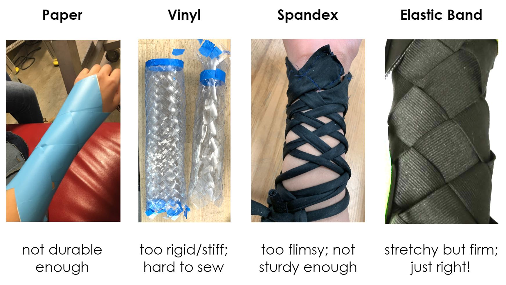

BiBO.

Challenges with popular compression therapy methods include excessive device handling during the workout, causing breaks in the fluidity of athletes’ workout routines. Alternatively, athletes may tend to schedule compression therapy sessions or appointments with professionals at times that work conveniently with their schedules, and not necessarily those that are convenient for their bodies. Some athletes may also turn to passive modes of compression therapy, which are not as effective as active modes of compression therapy.
So we asked ourselves ... how we might improve the experience of compression therapy for athletes and decided to focus on dynamizing and automating compression therapy for athletes, and integrating the process into workout routines?
We approached the goal of instrumenting compression with a creative mindset, taking inspiration from highly flexible origami patterns. Origami is an elegant medium that had the potential to compress and expand in natural ways.
The ‘Chinese Finger Trap’ weave pattern emerged as a successful mode of delivering compression to the fingers, which inspired us to explore the pattern further.

We developed an armband that consisted of a Chinese Finger trap-type elastic weave that was pulled by a linear actuator powered by a DC motor with a gearbox and threaded rod. Using a pulse oximeter that attaches to the user’s finger, Bibo turns on and off in response to your heart rate lowering.
In future iterations, it would be nice to see the motor chassis take a smaller form. It’s pretty bulky and the magnets that we used to keep the lid on weren't strong enough to keep the piece together through some high intensity workouts. Nevertheless, this product did excel in its mechanical functions.